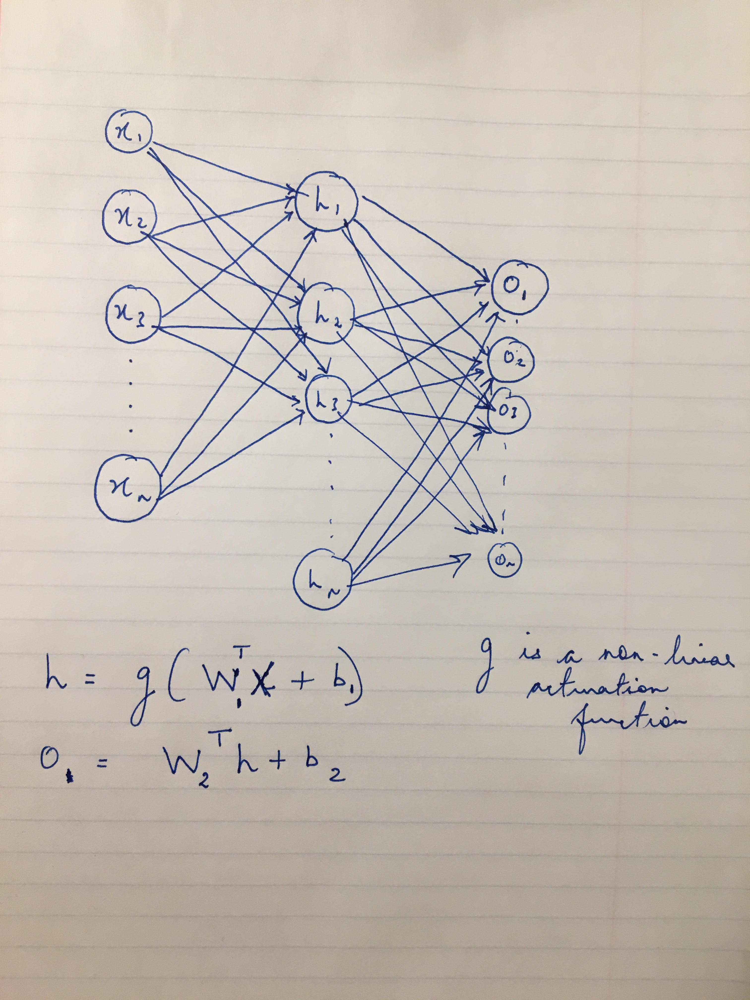

The purpose of this exercise is to get you accquainted with the basic operations of a fully connected neural network. We shall look at the two operations.
There are two file formats in the data directory.
.csv-These files contain the actual training or test
features. Notice the keywords dev and train . These denote the test
and train datasets' features respectively..txt-These files contain the label associated with
the respective train or dev fileThe first task is to predict whether a song was a ‘hit’, meaning that it made it onto the Billboard Top 50 — each instance has a label “Hit?” equal to “yes” (1) or “no” (0). The attributes or features are: year of release(multi-valued discrete, range [1900, 2000]), length of recording (continuous, range [0, 7]), jazz (binary discrete, “yes”/“no”), rock and roll (binary discrete, “yes”/“no”). As you might have guessed, this is a classification problem.
There are several things that you might want to consider before you start coding your architecture. To name a few:
Universal Approximate Theorem-Recall how the following
computation graph can be used to approximate almost any function. (Chapter 6,
Pg. 92).

g can be any non-linear activation function, say sigmoid.
W1, b1 is the weight matrix between the input and hidden
layer. Similarly, W2, b2 is the weight matrix between
the hidden layer and the output layer.
For the sake of simplicity, it is recommended that you implement a
single hidden layer architecture.
It might be worthwhile to spend some time pondering about the
dimensions of the various matrices and vectorizing your operations.
This should be straight-forward.
h = g(WT1x + b1)
o = WT2h + b2
Note that x, h, o, and b are column vectors in the above equations. You
can also vectorize the operation over the entire dataset by thinking of
x as the design matrix of the dataset instead of one row at a time.
Error function e = (o - y)2/2, where y is the value associated with the training example x. For a single layer architecture the update equations become: